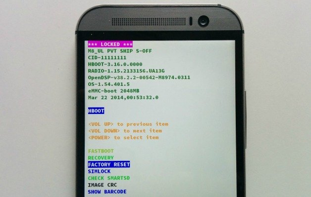
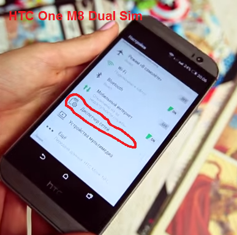
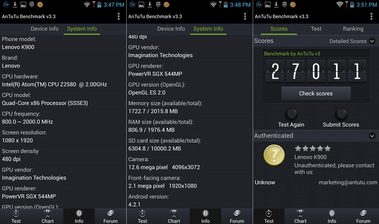
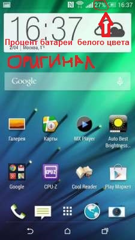

Как отличить оригинал устройства от подделки
Многие
люди, покупая устройство с рук или в непроверенных интернет-магазинах,
встречаются с подделками. Обычно внешних различий между оригиналом и
подделкой нет, определить можно только по "внутренним" факторам.
Сейчас мы их и разберем!
1) Самый простой способ- зайти в так называемый HBOOT (загрузчик OS). У копии его просто нет.
Для этого, заходим в телефоне: Настройки-Питание-Быстрый запуск и убираем галочку если она там стоит.
После этого полностью выключаем телефон и зажимаем клавишу громкости вниз+питание, после этого вы должны попасть в Hboot.
Выглядит он примерно так:

(Надписи могут быть другие)
Если зайти в HBOOT не получается, или открывается непонятная менюшка с иероглифами- значит у Вас подделка.
2) В
некоторых копиях, если зайти в настройки телефона, то можно увидеть
пункт "Управление сим картами". Если это есть, то это 100% подделка.
Если же Вы покупаете устройство с 2 симками, например, HTC One M8 Dual
Sim, то в настройках обязательно должен быть пункт "Диспетчер
сетей", но никак не "Управление сим картами".
Вот фото оригинала:

3) В
копии как правило изначально зашита программа Antutu Benchmark и
обновить или удалить ее через маркет нельзя, она очень сильно
отличается от новой версии.
Выглядит примерно вот так:

Естественно результаты тестирования в этой версии Antutu являются фейковыми.
4) Перед покупкой смартфона ознакомьтесь с техническими характеристиками, а особенно с разрешением экрана.
Например, HTC One M7 имеет FULL HD разрешение 1920х1080. Китайцы обычно штампуют копии с разрешением HD, то бишь 1280х720.
Теперь мы, чтобы узнать, какое разрешение имеет покупаемый смартфон, проделаем следующее:
делаем скриншот дисплея комбинациями клавиш кнопка питание + кнопка громкости вниз (одновременно).
Телефон сделал скриншот, о чем нам говорит уведомление в строке
состояния. Открываем шторку, переходим на изображение, и вот оно. Нажав
на кнопку СВЕДЕНИЯ мы видим всю информацию о скриншоте, и его
разрешение. Сравниваем полученное разрешение, и разрешение, указанное в
официальных технических характеристиках.
5) Некоторые модели можно отличить по установленной прошивке, например, когда телефон разблокирован, у копии процент батареи синего цвета, а у оригинала белого.
Данный пункт характерен для устройств с оболочкой HTC Sense 5.0 и выше.
Пример:

6) Перед покупкой потребуйте коробку от смартфона, проверьте соответствие IMEI на коробке и в телефоне...
Позвоните в HTC по бесплатному номеру 8 800 333 5181 (Для России), и продиктуйте оператору IMEI.
После этого они Вам скажут, оригинал это, или нет.
Время работы номера поддержки HTC:
09:00 - 21:00 (Пон - Пят )
09:00 - 13:00 (Суб )
Воскресенье- выходной.
Также, отличить копию от оригинала можно и по комплекту. Перед покупкой посмотрите в интернете
комплектацию смартфона, внимательно изучите надписи на коробке.
И конечно, очень рекомендую перед покупкой пойти в проверенный
магазин, например "Связной", и покрутить в руках оригинал.
Я думаю это очень поможет Вам в будущем выбрать оригинал, а не подделку.